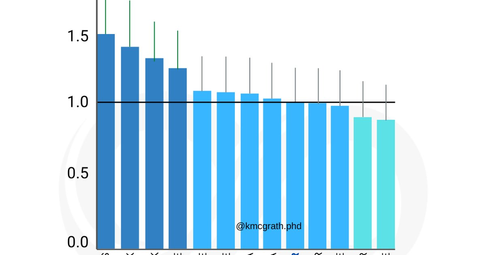

I’ll be honest. When I first read the Beverage Hydration Index paper from Ron Maughan’s lab, I didn’t believe it. Milk hydrates better than water? Coffee is almost as good as water? Beer isn’t that bad? It sounded like industry propaganda. But the study was solid. They gave people one liter of different beverages, measured their urine output over four hours, and calculated net fluid balance. The results were surprising. Milk came out on top with a BHI of 1.5. That means your body retains 50% more fluid from milk than from the same volume of plain water. Why? The protein, fat, and lactose slow gastric emptying, so the fluid stays in your system longer. Oral rehydration solutions like Pedialyte scored 1.1. Plain water is the baseline at 1.0. Coffee and tea came in at 0.98 — nearly as hydrating as water. Sports drinks were around 0.95 to 1.0. Juice and soda were around 0.9. Beer was 0.79. Wine was about 0.7. The coffee result blew my mind. I had been telling athletes that coffee was dehydrating. Turns out I was wrong. Moderate caffeine doesn’t cause a net fluid loss. You might pee sooner, but you retain almost all the fluid from the coffee. The old studies used huge caffeine doses — like 300 mg in one sitting — and measured urine output over only a few hours. Real world coffee drinking is different. So I started using the BHI with my clients. Not as a rigid rule, but as a way to rank their beverage choices. If you’re trying to hydrate, milk is great but has calories. Plain water is perfect for most situations. Coffee and tea are fine, especially if you’re using them to replace less hydrating drinks. Sports drinks are useful during long workouts but not necessary for sitting at a desk. Beer is a treat, not a hydration tool. Let me give you a real example. A client named Jenna was a busy mom who drank mostly Diet Coke. She knew it wasn’t healthy, but she craved the fizz and the caffeine. I asked her to switch one Diet Coke per day to a glass of water. Just one. She did it. Then I asked her to try sparkling water instead of Diet Coke. Same fizz, no artificial sweeteners, similar BHI. She liked it. Over a few weeks, she replaced three of her five daily Diet Cokes with sparkling water and plain water. Her headaches improved. Her skin looked better. She said she felt less bloated. The BHI of Diet Coke is about 0.89 — similar to regular soda. The BHI of plain water is 1.0. That small difference, repeated five times a day, added up. Another client, a runner named Tom, was drinking sports drinks all day. He thought they were healthier than water because they had electrolytes. But he wasn’t exercising enough to need that many electrolytes. He was drinking about 2 liters (68 ounces) of sports drink per day, which added 400 calories and 1,000 mg of sodium. His blood pressure was creeping up. We switched him to plain water for most of the day, and saved the sports drink for his runs. His blood pressure normalized, and his wallet was happier. The BHI isn’t just about ranking drinks. It’s about understanding trade‑offs. Milk is hydrating, but it’s not calorie‑free. Coffee is fine, but too much caffeine disrupts sleep. Beer is less hydrating, but one beer on a hot day isn’t going to dehydrate you dangerously — you just need to drink some water too. I built a way to apply BHI to daily life. First, list everything you drink in a typical day. Coffee, water, soda, milk, juice, beer, whatever. Estimate the volume in milliliters or ounces. Then multiply each volume by its BHI to get the net fluid contribution. Add them up. Compare that to your individualized fluid goal. That’s your real hydration. Let me do an example. A typical desk worker might have: 2 cups of coffee (475 mL total) at BHI 0.98 = 465 mL net. 4 cups of water (950 mL) at 1.0 = 950 mL. 1 can of soda (355 mL) at 0.89 = 316 mL. 1 glass of wine (150 mL) at 0.7 = 105 mL. Total net fluid = 465 + 950 + 316 + 105 = 1,836 mL (about 62 ounces). That’s below the 2.5‑3 liter recommendation for most people. No wonder they feel tired. Now adjust. Replace the soda with water. 355 mL at 1.0 instead of 0.89 adds about 39 mL net. Replace the wine with sparkling water. Another 150 mL at 1.0 adds 45 mL net. Add one more cup of water mid‑afternoon. 237 mL at 1.0. New total = 1,836 + 39 + 45 + 237 = 2,157 mL (73 ounces). That’s closer. Add an electrolyte drink after a workout and you’re there. You can see how small changes add up. You don’t have to quit coffee or never drink wine. You just need to compensate. Drink a glass of water between alcoholic drinks. Have a glass of water with your morning coffee. That’s it. I have a client who drinks a latte every morning. A latte is mostly milk, which has a BHI of 1.5. That’s excellent. But a latte also has about 150‑200 calories. If he’s trying to lose weight, that’s fine if it fits his budget. If he’s not, it’s still hydrating. He added a glass of water with his latte and felt less sluggish in the afternoon. The water didn’t replace the latte, it just added volume. The other thing I love about BHI is that it explains why some people feel better when they drink coconut water. Coconut water has a BHI around 1.0 — same as water. But it has potassium, magnesium, and a little sodium. For people who are low on electrolytes, the coconut water helps balance them. That’s not the BHI. That’s the electrolyte content. The fluid retention is similar to water, but the feeling of “rehydration” comes from the minerals. I’m not a huge coconut water evangelist. It’s expensive and the taste isn’t for everyone. But if you like it and you’re sweating a lot, it’s fine. Just don’t believe the marketing that it’s super hydrating. It’s not better than water. It’s just different. One more myth BHI busts: the idea that alcohol dehydrates you completely. Beer has a BHI of 0.79, meaning you retain about 79% of the volume. So if you drink a 12‑ounce (355 mL) beer, your body holds onto about 280 mL of fluid. The other 75 mL gets flushed out through the diuretic effect. That’s not zero. So you can have a beer on a hot day and still get some hydration from it. But you’d be better off drinking water and then having the beer separately if you want both. Wine is worse, with a BHI around 0.7. Spirits mixed with water or soda water might be closer to 0.8 or 0.9 depending on the mixer. But the alcohol itself is a diuretic. The best rule is: for every alcoholic drink, have a glass of water. That way your net hydration stays positive. I use the BHI tool constantly when people ask me, “Is coffee bad?” No. “Is milk good?” Yes, but watch calories. “What about kombucha?” It’s fine, but it’s mostly water. BHI for kombucha is about 0.95‑1.0. It’s not magical.Beverage Hydration Index Tool
Look up any common beverage. Get its BHI, net fluid contribution per cup, electrolyte content, and calorie load.
All data stays in your browser — we never see it.
Hydration Goal Setter
Combine with the BHI tool to track your net fluid intake from all beverages, not just water.
All data stays in your browser — we never see it.
Daily Water Intake Calculator
Set your individualized fluid goal based on weight, climate, and activity.
All data stays in your browser — we never see it.